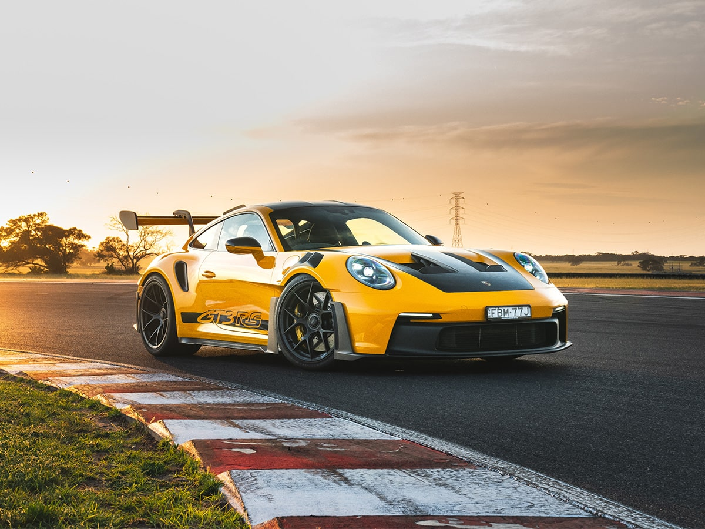
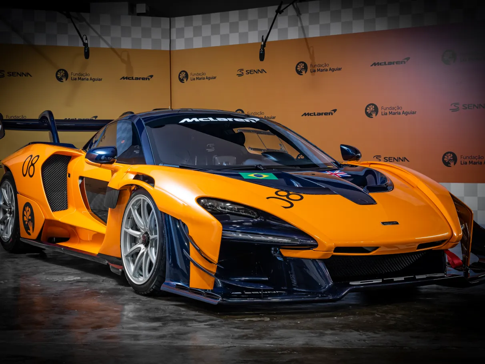

Lamborghini
.jpg)
A Lamborghini é uma fabricante italiana de carros esportivos de luxo conhecida por seus designs agressivos e desempenho impressionante. Fundada em 1963 por Ferruccio Lamborghini, a marca se tornou sinônimo de carros exóticos e de alta performance.
Modelos famosos incluem o Aventador, Huracán e o mais recente Revuelto, seu primeiro carro híbrido.
Ferrari

A Ferrari é uma das marcas de carros esportivos mais icônicas do mundo, fundada por Enzo Ferrari em 1939. Conhecida por seu cavalo empinado, a Ferrari tem uma rica história nas corridas e na produção de carros de rua de alto desempenho.
Entre seus modelos mais famosos estão a série 488, SF90 Stradale e o clássico Testarossa.
Porsche
A Porsche é uma fabricante alemã de carros esportivos de luxo fundada em 1931. Conhecida por seu design inconfundível e engenharia de precisão, a Porsche combina desempenho com conforto no dia a dia.
O modelo 911 é seu carro mais icônico, mas a marca também produz o Taycan (elétrico), o Cayenne (SUV) e o Panamera (sedã esportivo).
McLaren
A McLaren é uma fabricante britânica de carros esportivos que começou como uma equipe de Fórmula 1. Fundada por Bruce McLaren em 1963, a marca passou a produzir carros de rua em 1992 com o lendário F1.
Atualmente, a McLaren produz modelos como o 720S, Artura (híbrido) e o impressionante Speedtail.